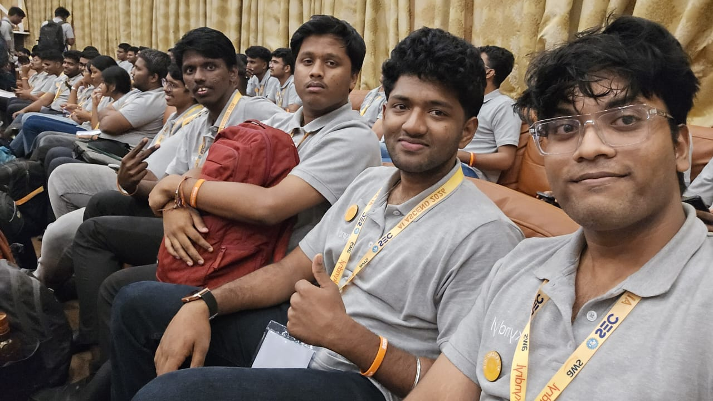
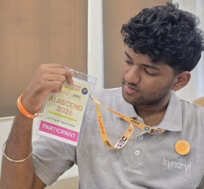

A collaborative software innovation by a team of four — built to simplify user interactions, automate grievance triage, and resolve citizen complaints through a self-training, AWS-native system.
The primary objective of Project 77 was to design and develop a reliable platform that simplifies user interactions, automates essential processes, and provides an intuitive experience through a well-organized interface. The project emphasizes usability, performance, and maintainability, ensuring it can evolve with future requirements. Rather than treating the build as a collection of features, the team focused on a solution that addresses real-world needs while staying scalable and efficient — moving through structured requirement analysis, system design, development, testing, and deployment.
One of the most rewarding aspects of Project 77 was working within a team environment. Our four-member team divided responsibilities based on individual strengths while maintaining continuous communication throughout the project lifecycle — simulating a real-world software development environment where teamwork, communication, and version control played a crucial role.
The project was developed using a modular architecture, allowing different components to be built independently and later integrated into a unified system — improving maintainability, simplifying debugging, and enabling smoother collaboration among team members.
As one of the four core team members, I actively contributed to the project's development by participating in planning, implementation, testing, and coordination activities — collaborating closely with my teammates to ensure smooth integration of features and consistent project progress.
Like any real-world project, Project 77 presented several technical and collaborative challenges. Coordinating development efforts among multiple contributors, managing code integration, resolving bugs, and ensuring feature compatibility required continuous teamwork and adaptability — and taught the value of clear communication, careful planning, and iterative improvement.
Four contributors, one build. Here's the team at AI Ascend 2026, where Project 77's approach to AI-driven civic systems took shape.


Project 77 reflects the team's dedication, creativity, and technical capability. While it successfully meets its current objectives, it also lays a strong foundation for future enhancements — advanced automation, improved scalability, additional features, and full cloud-based deployment.
Project 77 is more than a technical achievement: it's proof of working effectively within a team, contributing to complex software solutions, and adapting to real-world development challenges alongside three other Cloud Force teammates.